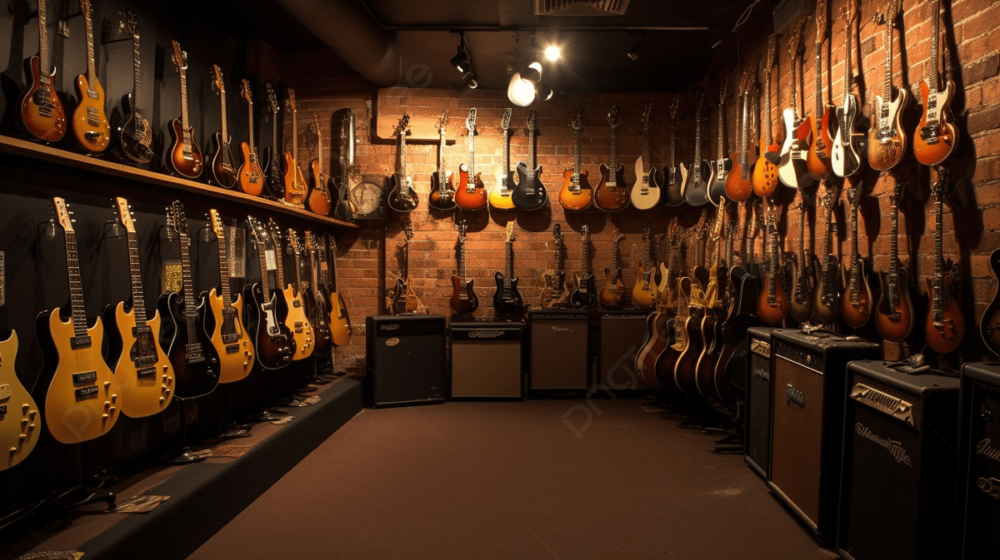

ESTABLISHED 2026
OUR LEGACY
Ang Strumify ay nagsimula sa isang simple pero madilim na workshop na puno ng amoy ng fresh mahogany at ang ugong ng tube amplifiers. Hindi lang kami basta nagbebenta ng gitara; layunin naming mag-curate ng mga instrumento na magsisilbing extension ng iyong kaluluwa.
Bawat gitara sa aming racks ay hand-selected. Naniniwala kami na mas magandang lugar ang mundo kapag ito ay mas maingay at mas melodic.
Read Full Story